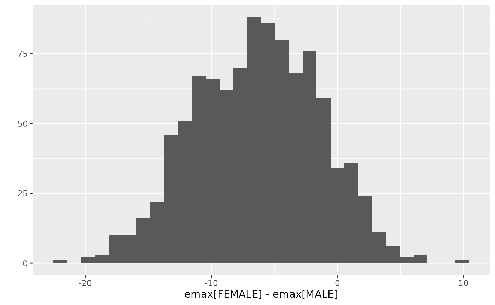

Simple Emax model fit with Stan
Kenta Yoshida
2024-12-05
Source:vignettes/emaxmodel.Rmd
emaxmodel.RmdThis vignette provide an overview of the workflow of Emax model analysis using this package.
Typical workflow
Model run with stan_emax function
stan_emax() is the main function of this package to
perform Emax model analysis on the data. This function requires minimum
two input arguments - formula and data. In the
formula argument, you will specify which columns of
data will be used as exposure and response data, in a
format similar to stats::lm() function,
e.g. response ~ exposure.
data(exposure.response.sample)
fit.emax <- stan_emax(response ~ exposure,
data = exposure.response.sample,
# the next line is only to make the example go fast enough
chains = 2, iter = 1000, seed = 12345
)
fit.emax
#> ---- Emax model fit with rstanemax ----
#>
#> mean se_mean sd 2.5% 25% 50% 75% 97.5% n_eff Rhat
#> emax 92.25 0.36 6.00 80.19 88.36 92.39 96.14 103.66 280.65 1.00
#> e0 5.72 0.30 4.65 -2.89 2.63 5.47 8.51 15.49 248.72 1.00
#> ec50 75.46 0.85 19.88 45.00 61.41 72.92 87.02 118.99 545.68 1.01
#> gamma 1.00 NaN 0.00 1.00 1.00 1.00 1.00 1.00 NaN NaN
#> sigma 16.60 0.07 1.63 13.79 15.47 16.52 17.60 20.03 585.62 1.00
#>
#> * Use `extract_stanfit()` function to extract raw stanfit object
#> * Use `extract_param()` function to extract posterior draws of key parameters
#> * Use `plot()` function to visualize model fit
#> * Use `posterior_predict()` or `posterior_predict_quantile()` function to get
#> raw predictions or make predictions on new data
#> * Use `extract_obs_mod_frame()` function to extract raw data
#> in a processed format (useful for plotting)plot() function shows the estimated Emax model curve
with 95% credible intervals of parameters.
plot(fit.emax)Output of plot() function (for stanemax
object) is a ggplot object, so you can apply additional
settings as you would do in ggplot2.
Here is an example of using log scale for x axis (note that exposure ==
0 is hanging at the very left, making the curve a bit weird).
plot(fit.emax) + scale_x_log10() + expand_limits(x = 1)
#> Warning in scale_x_log10(): log-10 transformation introduced infinite values.
#> log-10 transformation introduced infinite values.
#> log-10 transformation introduced infinite values.Raw output from rstan is stored in the output variable,
and you can access it with extract_stanfit() function.
class(extract_stanfit(fit.emax))
#> [1] "stanfit"
#> attr(,"package")
#> [1] "rstan"Prediction of response with new exposure data
posterior_predict() function allows users to predict the
response using new exposure data. If newdata is not
provided, the function returns the prediction on the exposures in
original data. The default output is a matrix of posterior predictions,
but you can also specify “dataframe” or “tibble” that contain posterior
predictions in a long format. See help of
rstanemax::posterior_predict() for the description of two
predictions, respHat and response.
response.pred <- posterior_predict(fit.emax, newdata = c(0, 100, 1000), returnType = "tibble")
response.pred %>% select(mcmcid, exposure, respHat, response)
#> # A tibble: 3,000 × 4
#> mcmcid exposure respHat response
#> <int> <dbl> <dbl[1d]> <dbl>
#> 1 1 0 11.8 14.1
#> 2 1 100 55.4 84.5
#> 3 1 1000 88.0 80.4
#> 4 2 0 -2.84 -17.0
#> 5 2 100 61.2 57.7
#> 6 2 1000 90.8 83.3
#> 7 3 0 4.01 -10.1
#> 8 3 100 57.5 57.6
#> 9 3 1000 92.1 85.6
#> 10 4 0 6.34 42.3
#> # ℹ 2,990 more rowsYou can also get quantiles of predictions with
posterior_predict_quantile() function.
resp.pred.quantile <- posterior_predict_quantile(fit.emax, newdata = seq(0, 5000, by = 100))
resp.pred.quantile
#> # A tibble: 51 × 11
#> exposure covemax covec50 cove0 Covariates ci_low ci_med ci_high pi_low pi_med
#> <dbl> <fct> <fct> <fct> <chr> <dbl> <dbl> <dbl> <dbl> <dbl>
#> 1 0 1 1 1 "" -1.71 5.47 13.9 -22.3 5.59
#> 2 100 1 1 1 "" 52.8 58.9 64.8 30.0 58.4
#> 3 200 1 1 1 "" 68.0 73.0 77.9 45.9 73.4
#> 4 300 1 1 1 "" 75.2 79.6 84.2 51.4 79.5
#> 5 400 1 1 1 "" 79.0 83.4 88.1 56.9 83.7
#> 6 500 1 1 1 "" 81.2 85.9 90.8 60.1 87.4
#> 7 600 1 1 1 "" 82.7 87.7 92.9 60.5 88.0
#> 8 700 1 1 1 "" 83.8 89.1 94.5 60.8 88.9
#> 9 800 1 1 1 "" 84.6 90.1 95.7 62.9 89.4
#> 10 900 1 1 1 "" 85.4 90.8 96.6 62.9 91.7
#> # ℹ 41 more rows
#> # ℹ 1 more variable: pi_high <dbl>Input data can be obtained in a same format with
extract_obs_mod_frame() function.
obs.formatted <- extract_obs_mod_frame(fit.emax)These are particularly useful when you want to plot the estimated Emax curve.
ggplot(resp.pred.quantile, aes(exposure, ci_med)) +
geom_line() +
geom_ribbon(aes(ymin = ci_low, ymax = ci_high), alpha = .5) +
geom_ribbon(aes(ymin = pi_low, ymax = pi_high), alpha = .2) +
geom_point(
data = obs.formatted,
aes(y = response)
) +
labs(y = "response")
Posterior draws of Emax model parameters can be extracted with
extract_param() function.
posterior.fit.emax <- extract_param(fit.emax)
posterior.fit.emax
#> # A tibble: 1,000 × 6
#> mcmcid emax e0 ec50 gamma sigma
#> <int> <dbl> <dbl> <dbl> <dbl[1d]> <dbl[1d]>
#> 1 1 83.1 11.8 90.6 1 18.0
#> 2 2 98.7 -2.84 54.0 1 17.0
#> 3 3 95.0 4.01 77.4 1 13.7
#> 4 4 92.4 6.34 60.6 1 16.5
#> 5 5 91.6 10.7 65.1 1 16.5
#> 6 6 100. 4.21 72.4 1 16.2
#> 7 7 91.8 3.87 59.6 1 15.5
#> 8 8 86.2 6.69 54.2 1 20.6
#> 9 9 97.4 2.26 59.3 1 18.0
#> 10 10 85.1 8.93 54.5 1 17.5
#> # ℹ 990 more rowsFix parameter values in Emax model
You can fix parameter values in Emax model for Emax, E0 and/or gamma
(Hill coefficient). See help of stan_emax() for the
details. The default is to fix gamma at 1 and to estimate Emax and E0
from data.
Below is the example of estimating gamma from data.
data(exposure.response.sample)
fit.emax.sigmoidal <- stan_emax(response ~ exposure,
data = exposure.response.sample,
gamma.fix = NULL,
# the next line is only to make the example go fast enough
chains = 2, iter = 1000, seed = 12345
)
fit.emax.sigmoidal
#> ---- Emax model fit with rstanemax ----
#>
#> mean se_mean sd 2.5% 25% 50% 75% 97.5% n_eff Rhat
#> emax 90.02 0.58 10.32 73.46 83.11 88.70 95.63 114.76 317.23 1.01
#> e0 6.96 0.21 4.84 -3.04 3.74 7.06 10.15 16.46 528.43 1.01
#> ec50 78.62 1.72 30.22 44.50 59.56 71.99 88.88 153.71 308.57 1.00
#> gamma 1.16 0.02 0.34 0.62 0.93 1.12 1.34 1.93 444.96 1.01
#> sigma 16.81 0.08 1.69 13.99 15.56 16.61 17.84 20.53 467.62 1.01
#>
#> * Use `extract_stanfit()` function to extract raw stanfit object
#> * Use `extract_param()` function to extract posterior draws of key parameters
#> * Use `plot()` function to visualize model fit
#> * Use `posterior_predict()` or `posterior_predict_quantile()` function to get
#> raw predictions or make predictions on new data
#> * Use `extract_obs_mod_frame()` function to extract raw data
#> in a processed format (useful for plotting)You can compare the difference of posterior predictions between two models (in this case they are very close to each other):
exposure_pred <- seq(min(exposure.response.sample$exposure),
max(exposure.response.sample$exposure),
length.out = 100
)
pred1 <-
posterior_predict_quantile(fit.emax, exposure_pred) %>%
mutate(model = "Emax")
pred2 <-
posterior_predict_quantile(fit.emax.sigmoidal, exposure_pred) %>%
mutate(model = "Sigmoidal Emax")
pred <- bind_rows(pred1, pred2)
ggplot(pred, aes(exposure, ci_med, color = model, fill = model)) +
geom_line() +
geom_ribbon(aes(ymin = ci_low, ymax = ci_high), alpha = .3) +
geom_ribbon(aes(ymin = pi_low, ymax = pi_high), alpha = .1, color = NA) +
geom_point(
data = exposure.response.sample, aes(exposure, response),
color = "black", fill = NA, size = 2
) +
labs(y = "response")
Set covariates
You can specify categorical covariates for Emax, EC50, and E0. See
help of stan_emax() for the details.
data(exposure.response.sample.with.cov)
test.data <-
mutate(exposure.response.sample.with.cov,
SEX = ifelse(cov2 == "B0", "MALE", "FEMALE")
)
fit.cov <- stan_emax(
formula = resp ~ conc, data = test.data,
param.cov = list(emax = "SEX"),
# the next line is only to make the example go fast enough
chains = 2, iter = 1000, seed = 12345
)
fit.cov
#> ---- Emax model fit with rstanemax ----
#>
#> mean se_mean sd 2.5% 25% 50% 75% 97.5% n_eff Rhat
#> emax[FEMALE] 81.26 0.16 3.81 73.53 78.70 81.14 83.70 88.79 552.80 1.01
#> emax[MALE] 87.64 0.20 5.19 77.54 84.15 87.63 91.21 98.17 667.62 1.01
#> e0 15.20 0.09 2.30 10.40 13.72 15.22 16.69 19.66 705.42 1.01
#> ec50 107.65 0.78 21.27 67.63 93.17 106.98 121.07 151.35 742.54 1.00
#> gamma 1.00 NaN 0.00 1.00 1.00 1.00 1.00 1.00 NaN NaN
#> sigma 10.51 0.03 1.00 8.84 9.77 10.44 11.15 12.70 871.21 1.00
#>
#> * Use `extract_stanfit()` function to extract raw stanfit object
#> * Use `extract_param()` function to extract posterior draws of key parameters
#> * Use `plot()` function to visualize model fit
#> * Use `posterior_predict()` or `posterior_predict_quantile()` function to get
#> raw predictions or make predictions on new data
#> * Use `extract_obs_mod_frame()` function to extract raw data
#> in a processed format (useful for plotting)
plot(fit.cov)You can extract MCMC samples from raw stanfit and evaluate differences between groups.
fit.cov.posterior <-
extract_param(fit.cov)
emax.posterior <-
fit.cov.posterior %>%
select(mcmcid, SEX, emax) %>%
tidyr::pivot_wider(names_from = SEX, values_from = emax) %>%
mutate(delta = FEMALE - MALE)
ggplot2::qplot(delta, data = emax.posterior, bins = 30) +
ggplot2::labs(x = "emax[FEMALE] - emax[MALE]")
#> Warning: `qplot()` was deprecated in ggplot2 3.4.0.
#> This warning is displayed once every 8 hours.
#> Call `lifecycle::last_lifecycle_warnings()` to see where this warning was
#> generated.
# Credible interval of delta
quantile(emax.posterior$delta, probs = c(0.025, 0.05, 0.5, 0.95, 0.975))
#> 2.5% 5% 50% 95% 97.5%
#> -16.117172 -14.467374 -6.249869 1.593632 2.551678
# Posterior probability of emax[FEMALE] < emax[MALE]
sum(emax.posterior$delta < 0) / nrow(emax.posterior)
#> [1] 0.903